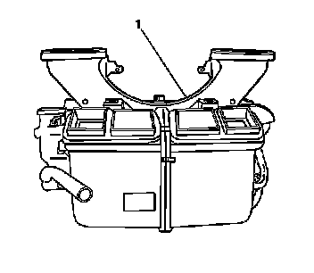
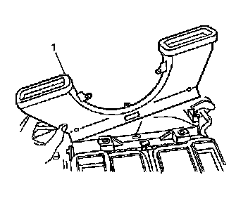

Windshield Defroster Duct Replacement
Windshield Defroster Duct Replacement
Removal Procedure
1. Remove the instrument panel (I/P) carrier. Refer to Instrument Panel Carrier Replacement (Left Hand Drive) (Service and Repair)Instrument Panel Carrier Replacement (Right Hand Drive) (Service and Repair) .

2. Press in on the tab to release the defroster duct (1) from the HVAC module.

3. Remove the defroster duct (1).
Installation Procedure
1. Install the defroster duct (1).
2. Press down on the defroster duct (1) until you hear the tabs engage.
3. Install the I/P carrier. Refer to Instrument Panel Carrier Replacement (Left Hand Drive) (Service and Repair)Instrument Panel Carrier Replacement (Right Hand Drive) (Service and Repair) .